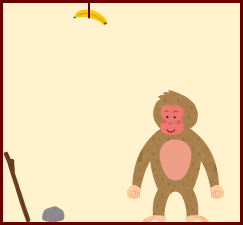

お腹が空いた猿の行動シミュレーション？！WM（ワーキングメモリ）要素
(述語 対象表現1 対象表現2 ……) で表す．対象記号 か，(修飾語 対象表現) で表す．例：
(床上 バナナ)： 床上にバナナがある．(持つ 右手 棒)： 右手に棒を持っている．(持つ 左手 (皮 バナナ))： 左手に皮になったバナナ（バナナの皮）を持っている．プロダクションルール
ルール名[引数]： 条件部 → 実行部. という形で表す．引数 は，変数をコンマで区切った並びで表す．条件部，実行部 は，いずれもWM要素の並びで表す．条件部，実行部 に含まれる変数は，引数で与えられた対象表現が代入されて用いられる．
nil は「空」「無」を表す特別な値で，変数に代入することはできない．条件部 に含まれるWM要素の全てがWMに含まれている場合，条件が満たされたとみなされ，その（代入された）ルールは実行可能となる．条件部 に含まれるWM要素をすべて取り除いた後，実行部 に含まれるWM要素をすべて追加する．
条件部 と 実行部 の両方に含まれるWM要素は，削除された後にまた追加されるので，削除されなかったのと同じことになる．プロダクション・ルールの集合（例）
; 停止のためのルール（以下 ；から行末まではコメントを表す）
停止[]: (満腹) → (満腹) (stop).
; 「h に持っている剥いたバナナを食べる」h は左右どちらかの手を表す．
バナナを食う[h]: (空腹) (持つ h (剥いた バナナ)) → (満腹) (持つ h (皮 バナナ)).
; 「h1 に持っているバナナを h2 で剥く」h1, h2 は，いずれも左右どちらかの手を表す．
バナナを剥く[h1, h2]:
(持つ h1 バナナ) (持つ h2 nil) → (持つ h1 (剥いた バナナ)) (持つ h2 nil).
; 「h に持っている棒で，天井にある x を落とす」h は左右どちらかの手，x は物を表す．
落とす[h, x]: (天井 x) (持つ h 棒) → (床上 x) (持つ h 棒).
; 「h に持っている x を手放す」h は左右どちらかの手，x は物を表す．
手放す[h, x]: (持つ h x) → (床上 x) (持つ h nil).
; 「h で x を拾う」h は左右どちらかの手，x は物を表す．
拾う[h, x]: (床上 x) (持つ h nil) → (持つ h x).
WM（ワーキングメモリ）
競合解消の戦略
優先度の大きいルールを優先する．
(優先度が同じルールについては，) 上(先)にあるルールを優先する．（Ordered）
同じルールの適用が複数パターンある場合：
…
以下同様にして優先順位を定める．（LRU)
WM の初期状態
(空腹) (持つ 右手 nil) (持つ 左手 nil) (床上 石) (床上 棒) (天井 バナナ)
WM の目標状態
(stop) が WM 中にある（実行を停止する）．動作例： （WM の状態と適用されるルールを交互に示す）
（https://aliquisgg-hub.github.io/pages/ape/ape.html で実行できるので試してみよう．
[パターン照合] と [競合解消・右辺実行] を交互にクリックすると実行できる．）
0. (空腹) (持つ 右手 nil) (持つ 左手 nil) (床上 石) (床上 棒) (天井 バナナ) ↓ 拾う[右手, 石]: (床上 石) (持つ 右手 nil) → (持つ 右手 石). 1. (空腹) (持つ 左手 nil) (床上 棒) (天井 バナナ) (持つ 右手 石) ↓ 手放す[右手, 石]: (持つ 右手 石) → (床上 石) (持つ 右手 nil). 2. (空腹) (持つ 左手 nil) (床上 棒) (天井 バナナ) (床上 石) (持つ 右手 nil) ↓ 拾う[左手, 棒]: (床上 棒) (持つ 左手 nil) → (持つ 左手 棒). 3. (空腹) (天井 バナナ) (床上 石) (持つ 右手 nil) (持つ 左手 棒) ↓ 落とす[左手, バナナ]: (天井 バナナ) (持つ 左手 棒) → (床上 バナナ) (持つ 左手 棒). 4. (空腹) (床上 石) (持つ 右手 nil) (床上 バナナ) (持つ 左手 棒) ↓ 手放す[左手, 棒]: (持つ 左手 棒) → (床上 棒) (持つ 左手 nil). 5. (空腹) (床上 石) (持つ 右手 nil) (床上 バナナ) (床上 棒) (持つ 左手 nil) ↓ 拾う[右手, 石]: (床上 石) (持つ 右手 nil) → (持つ 右手 石). 6. (空腹) (床上 バナナ) (床上 棒) (持つ 左手 nil) (持つ 右手 石) ↓ 手放す[右手, 石]: (持つ 右手 石) → (床上 石) (持つ 右手 nil). 7. (空腹) (床上 バナナ) (床上 棒) (持つ 左手 nil) (床上 石) (持つ 右手 nil) ↓ 拾う[左手, バナナ]: (床上 バナナ) (持つ 左手 nil) → (持つ 左手 バナナ). 8. (空腹) (床上 棒) (床上 石) (持つ 右手 nil) (持つ 左手 バナナ) ↓ バナナを剥く[左手, 右手]: ↓ (持つ 左手 バナナ) (持つ 右手 nil) → (持つ 左手 (剥いた バナナ)) (持つ 右手 nil). 9. (空腹) (床上 棒) (床上 石) (持つ 左手 (剥いた バナナ)) (持つ 右手 nil) ↓ バナナを食う[左手]: (空腹) (持つ 左手 (剥いた バナナ)) → (満腹) (持つ 左手 (皮 バナナ)). 10. (床上 棒) (床上 石) (持つ 右手 nil) (満腹) (持つ 左手 (皮 バナナ)) ↓ 停止[]: (満腹) → (満腹) (stop). 11. (床上 棒) (床上 石) (持つ 右手 nil) (持つ 左手 (皮 バナナ)) (満腹) (stop)
例えば，バナナを食う[h] というルールは，バナナを変数に置き換えることにより，果物を食う[h, x] というルールを構成できる．
; h に持っている剥いた果物 x を食べる
果物を食う[h, x]: (持つ h (剥いた x)) (空腹) → (持つ h (皮 x)) (満腹).
例えば，上の動作例の 7. ～ 10. で用いられた，拾う[h, x]，バナナを剥く[h1, h2]，バナナを食う[h] の3つのルールを統合して，バナナを拾って剥いて食う[h1, h2] というルールを構成できる．
(空腹) (床上 バナナ) (持つ h1 nil) (持つ h2 nil) ↓ 拾う[h1, バナナ]: (床上 バナナ) (持つ h1 nil) → (持つ h1 バナナ). (空腹) (持つ h2 nil) (持つ h1 バナナ) ↓ バナナを剥く[h1, h2]: ↓ (持つ h1 バナナ) (持つ h2 nil) → (持つ h1 (剥いた バナナ)) (持つ h2 nil). (空腹) (持つ h1 (剥いた バナナ)) (持つ h2 nil) ↓ バナナを食う[h1]: (空腹) (持つ h1 (剥いた バナナ)) → (満腹) (持つ h1 (皮 バナナ)). (持つ h2 nil) (満腹) (持つ h1 (皮 バナナ))
より．以下のルールが生成できる．
; h1 でバナナを拾い，h2 で剥いて食べる．
バナナを拾って剥いて食う[h1, h2]:
(空腹) (床上 バナナ) (持つ h1 nil) (持つ h2 nil)
→ (持つ h2 nil) (満腹) (持つ h1 (皮 バナナ)).
このルールを用いると，より少ない手順で目標に到達できる．